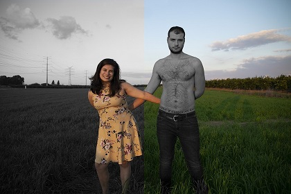
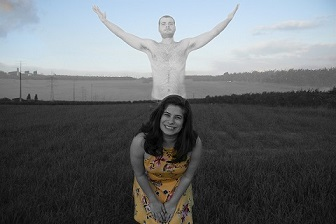

פורטרט שלי:
שתי גרסאות:


עיצוב זה שיצרתי מתאר אותי-קיימים בי שני חלקים :
החלק הראשון הוא החלק הנשי,הרגיש והרך
אשר על מנת להכיר אותו יש להכיר אותי לעומק
ואילו החלק השני והמנוגד הוא החלק הגברי,
הנוקשה ובעל החומות
אשר מתבטא בגווני אפור